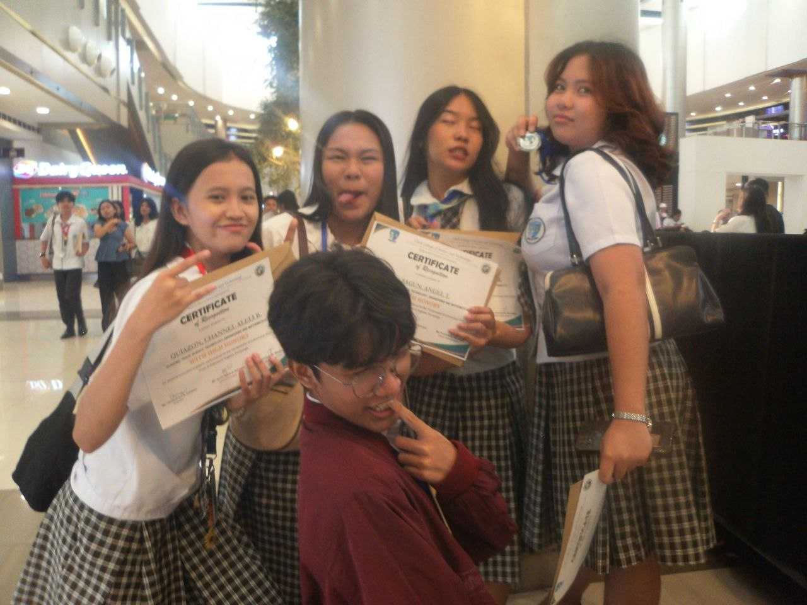
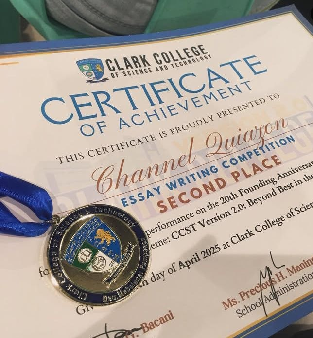

Achievements Vault
Where hardwork pays off


This section highlights my achievements during my Senior High School (SHS) years, where I developed both academically and personally. Throughout this period, I actively participated in various school activities, which helped me improve my skills, discipline, and confidence.
During my SHS journey, I was able to accomplish several academic and extracurricular milestones that reflect my dedication and hard work. Each achievement represents not only my efforts in school but also my willingness to learn, grow, and take part in opportunities that contributed to my overall development as a student.